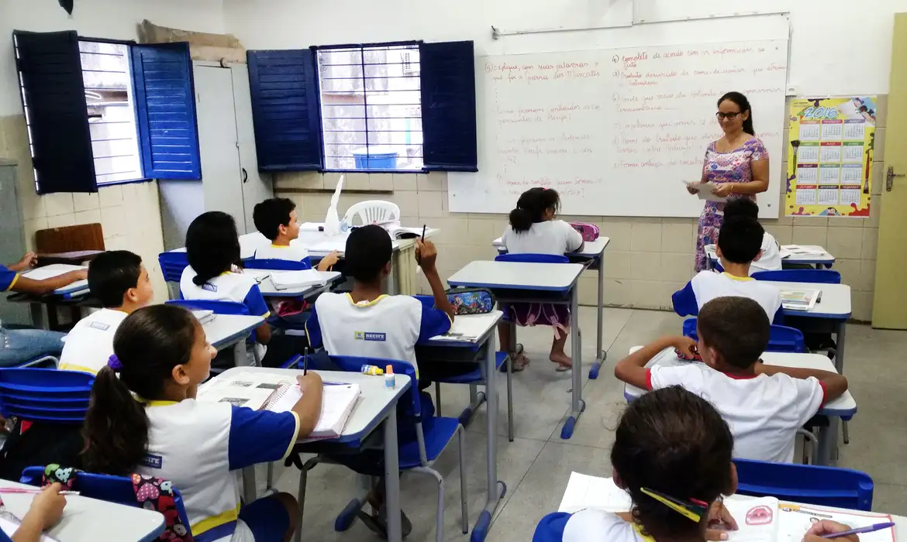

Principais Indicadores
IDEB
Índice de Desenvolvimento da Educação Básica, principal indicador de qualidade do ensino no Brasil.

Evasão Escolar
Taxas de abandono escolar por região, série e faixa etária, revelando desafios de permanência.

Infraestrutura
Condições físicas das escolas: bibliotecas, laboratórios, quadras esportivas e acesso à internet.